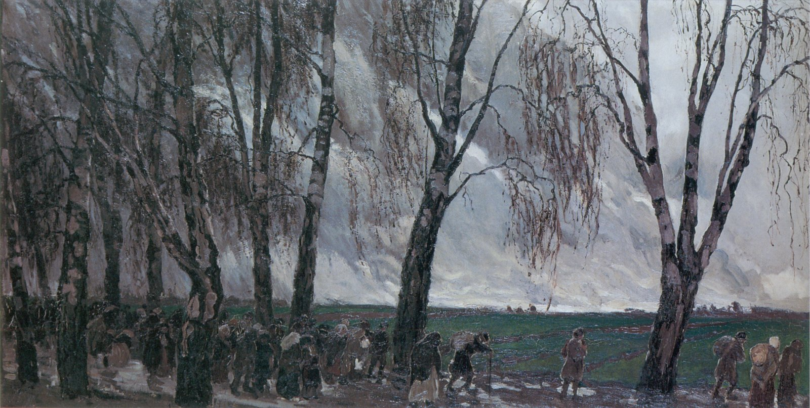
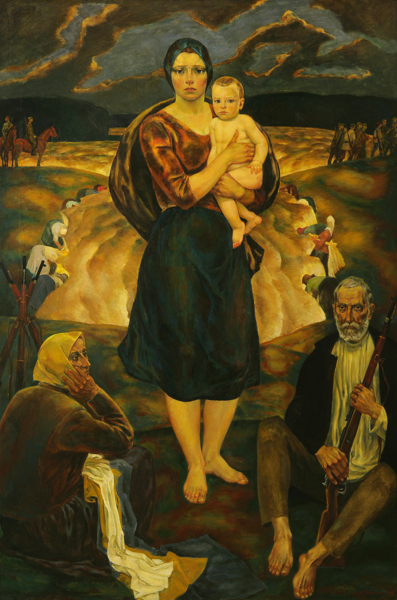

Живопись Беларуси XX века
XX век стал для белорусского изобразительного искусства эпохой радикальных перемен. В начале столетия художники осваивали импрессионизм, символизм и модерн, а Витебск на несколько лет превратился в один из центров мирового авангарда: Марк Шагал основал здесь художественное училище, а Казимир Малевич и его объединение УНОВИС утверждали супрематизм. После 1917 года и образования БССР в 1920-е годы ещё сохранялась стилистическая свобода, но уже в 1930-е годы живопись была поставлена в строгие рамки метода социалистического реализма, хотя и сохраняла национальные традиции. В годы Великой Отечественной войны главной темой произведений стали патриотизм, мужество народа и боль за оккупированную родную землю – эта тема осталась центральной и в послевоенные десятилетия, воплотившись в том числе в «Партизанской мадонне» Михаила Савицкого. В послевоенные десятилетия белорусская живопись достигла зрелости в жанрах портрета, пейзажа и монументальной исторической картины, а имена Ивана Ахремчика, Гавриила Ващенко, Мая Данцига и Михаила Савицкого определили её лицо.
Фердинанд Рущиц (1870–1936)
Символизм, экспрессивный пейзаж

«Беженцы» (1902)
Фердинанд Рущиц родился в 1870 году в имении Богданово Ошмянского уезда Виленской губернии в шляхетской семье. Детство и юность прошли в Минске, где он окончил классическую гимназию. Поступил в Петербургскую академию художеств, где учился у Ивана Шишкина и Архипа Куинджи. После окончания учёбы вернулся в Богданово. Был профессором Академии изящных искусств в Кракове и Школы изящных искусств в Варшаве. Рущиц проявил себя не только как живописец, но и как выдающийся педагог, театральный декоратор и график. Умер в 1936 году в родном Богданове.
Связь с историей
Рущиц творил в эпоху глубоких социальных сдвигов, крестьянского малоземелья и массового исхода населения из родных краёв. Его полотно «Беженцы» (1902) – это одна из самых пронзительных картин белорусского искусства начала XX века. Через мрачный, гнетущий пейзаж и уходящие вдаль фигуры людей на телегах художник передал глубокую социальную трагедию белорусской деревни той эпохи – драму вынужденного ухода людей с родной земли в поисках лучшей доли и спасения. После 1917 года Рущиц активно занимался спасением культурного наследия региона: он стал одним из основателей и первым деканом факультета изящных искусств Университета Стефана Батория в Вильне, сохранив преемственность художественного образования в межвоенный период.
Основные произведения (XX век):
- «Беженцы» (1902)
- «Млын в зимнее время» (1902)
- «Облако» (1902)
- «Непотопляемый» (Nec mergitur) (1904-1905)
- «Обсерватория (Балкон)» (1910)
Юдель Пэн (1854–1937)
Реализм, бытовой жанр, еврейский национальный портрет

«Часовщик» (1914)
Юдель Пэн родился в Новоалександровске, но вся его зрелая жизнь и творчество неразрывно связаны с Витебском. Окончил Петербургскую академию художеств. В 1892 году открыл в Витебске первую в Российской империи частную Школу рисования и живописи. Пэн стал первооткрывателем талантов: именно он заметил и воспитал Марка Шагала, Осипа Цадкина, Лазаря Лисицкого и многих других звёзд мирового авангарда. Трагически погиб в Витебске в 1937 году.
Связь с историей
Пэн задокументировал в искусстве уникальный пласт белорусской городской истории – мир еврейских местечек и ремесленного Витебска начала XX века. Его картина «Часовщик» (1914) детально воссоздаёт образ скромного труженика, погружённого в работу на фоне уходящего уклада предреволюционной эпохи. После революции 1917 года Пэн, несмотря на свой классический академический стиль, поддержал создание Витебского народного художественного училища, став в 1920-е годы важной фигурой Витебского художественного ренессанса. В 1927 году ему было присвоено звание «Заслуженный еврейский художник».
Основные произведения (XX век):
- «Старый портной» (1910-е)
- «Слепой» (1912)
- «Часовщик» (1914)
- «Портрет Марка Шагала» (1914)
- «Уличный сапожник» (1924)
Витольд Бялыницкий-Бируля (1872–1957)
Лирический импрессионистический пейзаж, реализм

«Лёд прошёл» (1930)
Витольд Каэтанович Бялыницкий-Бируля родился в 1872 году в имении Крынки Могилёвской губернии. Обучался в Киевской рисовальной школе, затем в Московском училище живописи, ваяния и зодчества под руководством Исаака Левитана. С начала 1900-х годов обосновался на даче-мастерской «Чайка» в Тверской губернии, но на протяжении всей жизни регулярно приезжал в Беларусь. В 1904 году удостоен звания академика. После революции успешно интегрировался в советскую культуру, став народным художником БССР в 1944 году. Умер в 1957 году.
Связь с историей
Творчество Бялыницкого-Бирули послужило эстетическим мостом, соединившим дореволюционные традиции пейзажной школы с советским искусством XX века. Его полотно «Лёд прошёл» (1930) – пример чистой поэтики природы, свободной от идеологического давления раннего советского периода. В послевоенные годы мастер приехал в освобождённый и разрушенный Минск, создав цикл работ («Цветущие яблони» и др.), которые метафорически зафиксировали возрождение мирной жизни в республике.
Основные произведения (XX век):
- «Зимний сон» (1911)
- «Изумруд весны» (1915)
- «Весна» (1910-е)
- «Лёд прошёл» (1930)
- «Цветущие яблони» (1947)
Язэп Дроздович (1888–1954)
Модерн, космический реализм, наивное искусство

«Триумф Вселенной» (1930-е)
Язэп Дроздович родился в 1888 году в застенке Пуньки Дисненского уезда Виленской губернии. Учился в Виленской рисовальной школе Ивана Трутнева. Стал уникальной фигурой: живописцем, графиком, археологом, этнографом и писателем. В 1919–1921 годах иллюстрировал белорусские учебники и журналы в Минске. После Рижского мирного договора остался в Западной Беларуси. Странствовал по деревням, рисовал для крестьян уникальные расписные ковры за еду и кров, одновременно записывая фольклор. Умер в нищете в 1954 году.
Связь с историей
Дроздович – один из главных столпов белорусского национального возрождения первой половины XX века. Находясь в условиях полонизации Западной Беларуси в 1920–1930-е годы, он конструировал национальный миф через искусство. Картина «Триумф Вселенной» (1930-е) и вся его «космическая» серия, написанная за три десятилетия до полёта человека в космос, отражала уникальную философию художника. Дроздович стал первопроходцем космической темы в мировом искусстве, соединив фольклорное сознание белорусов с научной фантастикой.
Основные произведения (XX век):
- «Триумф Вселенной» (1930-е)
- «Жизнь на Марсе» (серия, 1931)
- «Встреча весны на Сатурне» (1932)
- «Портрет Франциска Скорины» (1940-е)
- Расписные ковры (1930–1940-е)
Май Данциг (1930–2017)
Соцреализм, «суровый стиль», экспрессионизм

«Мой Минск» (1967)
Май Данциг родился в Минске в 1930 году. Окончил Минское художественное училище и Московский художественный институт им. Сурикова. Вернувшись в Беларусь, долгие годы преподавал в Белорусской государственной академии искусств, воспитав целое поколение художников. Стал одним из главных представителей «сурового стиля» в республике. Народный художник Беларуси (1995). Умер в Минске в 2017 году.
Связь с историей
Творчество Данцига неразрывно связано с бурным послевоенным восстановлением Беларуси. Его грандиозное полотно «Мой Минск» (1967) стало художественным гимном возрождённой столице БССР. Данциг показал город с высоты птичьего полёта как живой, динамичный и строящийся организм, символизирующий преодоление военных разрушений. Его картины зафиксировали дух советской «оттепели» и градостроительный оптимизм 1960–1970-х годов.
Основные произведения (XX век):
- «Сумерки в городе» (1960-е)
- «Новосёлы» (1962)
- «Мой Минск» (1967)
- «Беларусь – мать партизанская» (1967)
- «И помнит мир спасённый» (1985)
Михаил Савицкий (1922–2010)
Соцреализм, «суровый стиль», монументальная живопись

«Партизанская мадонна» (1967)
Михаил Савицкий родился в 1922 году в деревне Звенячи Витебской области. С началом Великой Отечественной войны ушёл на фронт, участвовал в обороне Севастополя. Попал в плен, прошёл через нацистские концлагеря (включая Бухенвальд и Дахау), где чудом выжил. После войны окончил институт им. Сурикова. Стал ключевой фигурой послевоенного белорусского искусства и руководителем Академических мастерских. Герой Беларуси (2006). Умер в Минске в 2010 году.
Связь с историей
Творчество Савицкого – это художественный документ трагедии и триумфа белорусского народа в XX веке. Его «Партизанская мадонна» (1967) переосмысляет традиционный образ Богородицы в реалиях тотальной партизанской войны на территории Беларуси. Написанная в экспрессивном «суровом стиле», картина лишена парадного пафоса, транслируя глубокую скорбь, святость материнства и несгибаемое мужество. Другой его масштабный исторический вклад – серия «Цифры на сердце» (1974–1979, 1987), ставшая мировым реквиемом жертвам нацизма.
Основные произведения (XX век):
- «Партизанская мадонна» (1967)
- «Витебские ворота» (1967)
- «Поле» (1974)
- «Цифры на сердце» (цикл картин, 1974–1979, 1987)
- «Партизанская мадонна Минская» (1978)